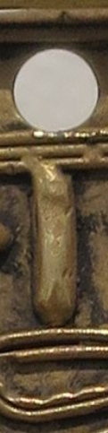

Kiyetiatigua Cabiativa

Indigena perteneciente al pueblo Muisca. Nacido en predios del antiguo Resguardo de "El Cerr" en 19XX , ubicado en Suba y que fue obsorbido por la expansion urbana de Bogotá. Se ha caracterizado por ser un constante investigador de la historia. Sus poemas estan basados en las historias que ha venido escuchando trasmitidas de generacion en generacion, por sus abuelos y antepasados. Sus poemas han salido en la revista "Suati: Cancion del Sol" y en el libro: "WOUMAIN poesia indigena y gitana, contemporanea de Colombia.